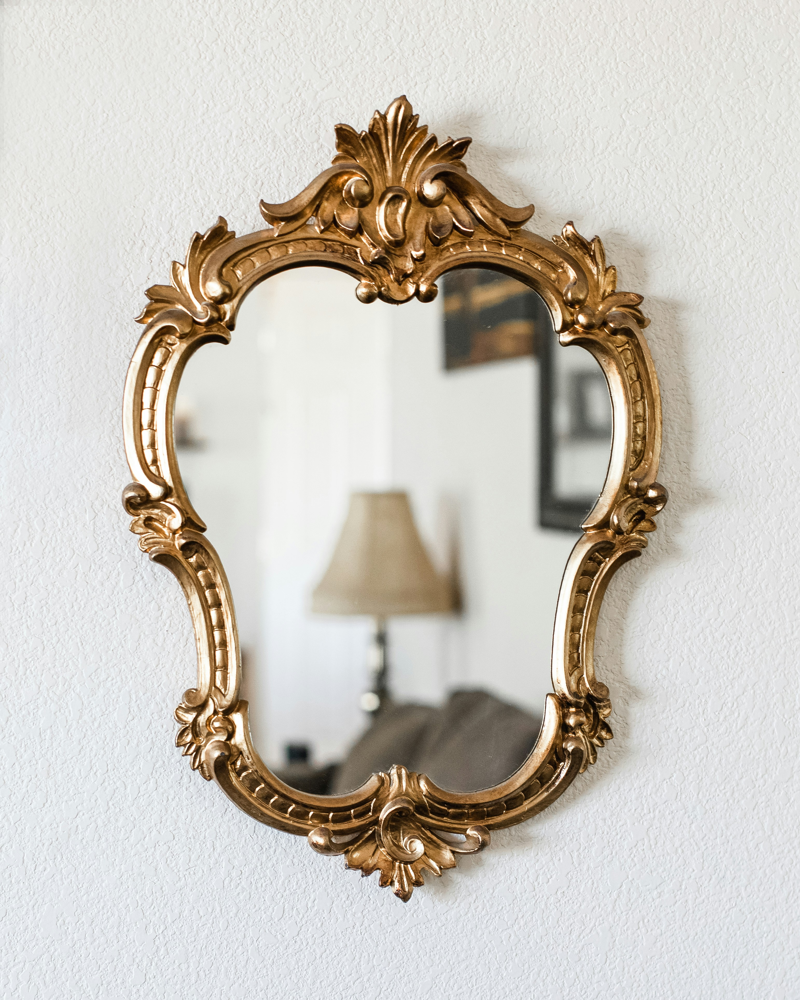
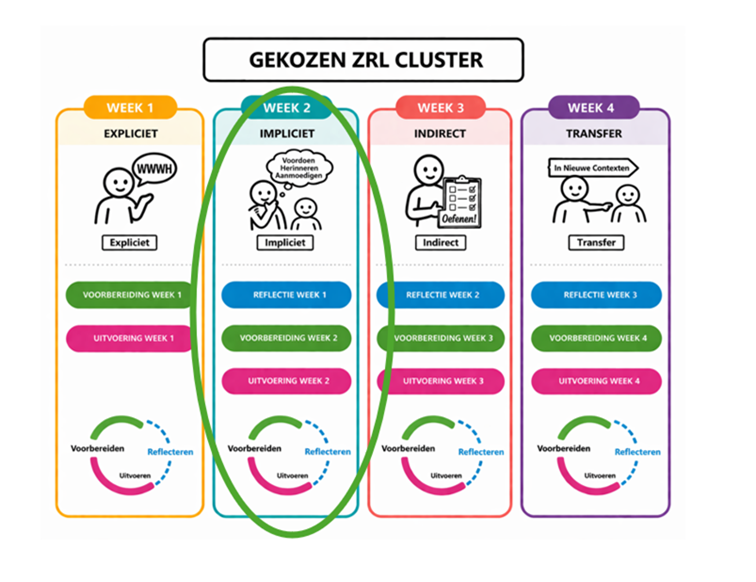
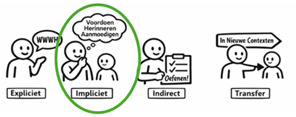
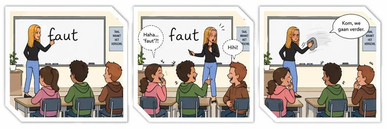
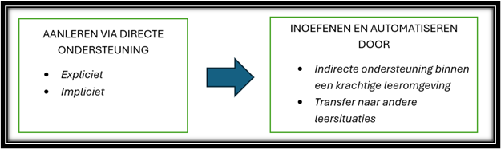

CYCLUS 2 – WEEK 2
Impliciete ondersteuning
⏱ Tijdsindicatie: max. 60 minuten
Deze week nemen we de ondersteuningsvorm impliciete directe ondersteuning onder de loep.
1. Even terugblikken
A. Overzicht

Vorige week:
- kozen we een cluster met ZRL-vaardigheden uit, om met onze leerlingen de komende vier weken mee aan de slag te gaan,
- Kozen we één werkvorm uit één van de vier inspiratiegidsen expliciete directe ondersteuning,
- planden we hoe we deze werkvorm in ons klas zouden uitvoeren (voorbereidingsfase)
- stonden we stil bij de uitvoering ervan
- & gingen we vol goede moed aan de slag met onze klas (uitvoeringsfase)
B. Leerdagboek
Deze week:
- staan we allereerst in ons leerdagboek stil bij hoe ons experiment gelopen is. Wat lukte goed? Wat lukte minder goed? Wat leren we hieruit? (reflectiefase)
- zetten we onze motivatie voor de nieuwe week op scherp
- en nemen we de volgende ondersteuningsvorm onder de loep.
Ga nu eerst naar je leerdagboek via deze link (sla het eerst op jouw pc op voor je erin werkt) of via de bijlage bij de mail.
Klik hier voor het leerdagboek2. Korte herhaling
Vorige week hadden we het over expliciete directe ondersteuning. We exploreerden wat dit precies inhoudt, en gingen hiermee aan de slag in de klas. Kan jij volgende oefening correct invullen en zo je kennis opfrissen?
Invuloefening
Kies uit de volgende woorden: Expliciete, taal, waarom, aangeleerd, hoe, voorstellingsvermogen, wat en wanneer
Expliciete ondersteuning gaat over het expliciet verwoorden van 1. ……………………….., 2………………………., 3…………………….. en 4……………………….. van een ZRL vaardigheid.
Automatiseren van een vaardigheid kan pas wanneer een vaardigheid eerst is 5. ……………… via o.a. 6. …………………….. ondersteuning.
Expliciete ondersteuning geeft 7. ……………………… aan de ZRL vaardigheden. Dit laat het begrijpen van, denken en praten over de ZRL vaardigheden mogelijk.
Doorheen de werkvormen poogden we ook het 8. ……………………………… van de leerlingen aan te wakkeren. De werkvormen lieten leerlingen eerst samen nadenken over een ZRL-vaardigheid en hoe ze dit bij zichzelf reeds ervoeren, om daarna het overzicht te bieden via het expliciteren ervan.
Klik hier voor de oplossing
Antwoorden:
- 1 t.e.m. 4: Wat, Waarom, Wanneer, Hoe
- 5. Aangeleerd.
- 6. Expliciete
- 7. Taal
- 8. voorstellingsvermogen
3. Vooruitkijken – opzet van de week
Deze week nemen we de ondersteuningsvorm ‘impliciete directe ondersteuning’ onder de loep.
We stonden reeds stil bij vorige week (reflectie week 1).
Nu gaan we dieper in op
- WAT impliciete ondersteuning is,
- WAAROM dit belangrijk is,
- HOE we hiermee aan de slag kunnen in ons klas,
- BEREIDEN we dit VOOR (voorbereidingsfase) &;
- VOEREN we dit uit in onze klas (uitvoeringsfase)

4. Impliciete ondersteuning

A. Korte teaser

Deze leerkracht maakt een fout die jullie wellicht niet maken. Los daarvan maakt iedereen wel eens een fout. Dat fouten bij leren hoort en niet het einde van de wereld is, is een belangrijke les voor leerlingen. Kinderen pikken daarbij vaak nog meer op van wat we doen dan van wat we zeggen, zeker als die twee tegenstrijdig zijn.
De juf in het voorbeeld mag nog 100 maal zeggen dat fouten maken niet erg is, ze toont in dit moment het omgekeerde én dat zal vaker blijven hangen.
Practice what you preach dus! Onze modelfunctie valt niet te onderschatten.
Modelleren is één manier om aan impliciete ondersteuning te doen. We bekijken hieronder wat hier nog allemaal onder valt, en gaan daarna zelf aan de slag.
Wist-je-datje: Een open houding tegenover fouten, samen met het reflecteren erover draagt bij aan diepgaand leren en sterkere ZRL-vaardigheden. Fouten normaliseren en bespreken in een veilige omgeving doen motivatie en zelfinzicht groeien (Leerpunt, 2026)
B. Impliciete ondersteuning: wat en waarom?
Impliciete ondersteuning hoort samen met expliciete ondersteuning tot de directe ondersteuning van zelfregulerend leren.
Enkele aandachtspunten:
- Beide vormen komen best geïntegreerd in de lessen aan bod, verbonden aan de leerstof.
- Leerlingen moeten eerst expliciete directe ondersteuning krijgen vooraleer ze baat kunnen hebben bij impliciete directe ondersteuning.
- Een goede balans vinden tussen het aanbieden van deze twee vormen, afgestemd op wat leerlingen al kennen en kunnen, is belangrijk om de ZRL-vaardigheden goed aan te leren, om ze daarna te kunnen inoefenen in een leercontext die dit verder bevordert. (Consortium Mozaïc, 2025; Leerpunt, 2026)

“Impliciete instructie is als het toevoegen van groenten aan een pastasaus. Het blijft pasta, maar de voedingswaarde neemt toe”. (Last en Branson, 2025)
En nee, het wordt niet per sé lekkerder, enkel voedzamer.
Niet alles hoeft altijd expliciet benoemd te worden, impliciet stimuleren heeft ook een enorme meerwaarde!
Maar hoe doen we dit nu?
Men spreekt van impliciet voordoen, uitleggen, verzoeken & bevragen (Consortium Mozaïc, 2025; Leerpunt, 2026).
Opgelet
Je kan uiteraard ook expliciet voordoen, uitleggen, verzoeken en bevragen, wanneer je de WWWH er expliciet bij benoemt. Bij impliciete ondersteuning gaan we dit niet doen. We kunnen wel verwijzen naar de expliciete ondersteuning die al aan bod kwam. De buzz-woorden of leerlingentaal rond de ZRL-vaardigheid kan leerlingen triggeren, zonder dat het allemaal opnieuw expliciet moet uitgelegd worden.
C. Vier manieren om aan impliciete ondersteuning te doen
We zoomen even in op de 4 manieren om impliciet te ondersteunen. Om het verschil tussen de 4 manieren of vormen uit de literatuur goed te kaderen hebben we de vrijheid genomen deze iets anders te formulieren. We spreken van
- 1. Modelleren of zelf de vaardigheid laten zien
- 2. Hardop denken of het denkproces modelleren
- 3. Aanmoedigen om de vaardigheid te gebruiken of herinneren aan de vaardigheid
- 4. Bevragen of aan het denken zetten
1. Modelleren of zelf de vaardigheid laten zien
Bij voordoen modelleert de leerkracht of laat de leerkracht de ZRL- vaardigheid zien in zijn handelen.
Enkele voorbeelden:
- De leerkracht doet voor hoe je een aantal begrippen best instudeert.
- De leerkracht schrijft het lesdoel op het bord
- De leerkracht noteert bij de les een onthoudbubbel gelinkt aan het hoofddoel van de les.
2. Hardop denken of het denkproces modelleren
De leerkracht verwoordt diens denkproces bij het gebruiken van een ZRL-vaardigheid luidop of hardop.Enkele voorbeelden:
- De leerkracht verwoordt stap voor stap hoe je een grote opdracht in stappen opdeelt of het studeren voor een toets inplant.
- De leerkracht verwoordt stap voor stap het controleren of een oefening wel juist kan zijn.
- De leerkracht verwoordt luidop hoe hij zich motiveert bij een uitdagende oefening.
3. Aanmoedigen om de vaardigheid te gebruiken of herinneren aan de vaardigheid
De leerkracht moedigt de leerling aan de ZRL vaardigheid te gebruiken of herinnert de leerling aan de ZRL vaardigheid. Hierbij kan verwezen worden naar een voorafgaande expliciete instructie.Enkele voorbeelden:
- De leerkracht herinnert de leerling eraan alle nodige materialen klaar te leggen.
- De leerkracht moedigt de leerling die aangeeft iets niet te begrijpen aan om een gerichte hulpvraag te stellen.
- De leerkracht moedigt de leerlingen aan na te denken over hoe ze de leerstof zullen instuderen.
4. Bevragen of aan het denken zetten
Bij bevragen bevraagt de leerkracht de leerlingen over het gebruik van de ZRL vaardigheid en zet de leerlingen aan het denken.
Enkele voorbeelden:
- De leerkracht bevraagt de leerlingen hoeveel tijd ze zouden nodig hebben om iets in te studeren/ een opdracht te maken.
- De leerkracht bevraagt wat er allemaal moet gebeuren om een opdracht succesvol te voltooien.
- De leerkracht bevraagt welke strategieën de leerlingen zullen gebruiken om te studeren voor de toets.
Wist-je-datje: Wie meer taalvaardig is, is beter in staat is om taal te geven aan zijn eigen functioneren en aan zijn omgeving en heeft meer handvaten voor zelfregulatie. Taal is een belangrijk voertuig voor zelfinzicht en zelfregulatie. Het begeleiden van de ontplooiing van de taal- en denkvaardigheden zoals kritisch denken, oordelen, kiezen, argumenteren, ... is dus super belangrijk. (Jolles in Drok et al, 2024)
Het hardop denken, aanmoedigen, herinneren en bevragen draagt duidelijk bij tot wat men noemt metacognitieve gesprekken in de klas en het opbouwen van een woordenschat/taal rond zelfregulerend leren.
D. Planning: wanneer en hoe?
Voorgaande gaf zicht op wat impliciete ondersteuning zoal kan inhouden in een lessituatie. De leerkracht staat daarbij centraal en neemt ‘the lead’ door ZRL aan bod te brengen, door wat je doet, zegt, verzoekt of bevraagt.
Hoe gaan wij hier nu mee aan de slag deze week? Griet en Nathalie voorzagen deze keer geen gids maar een reflectiedocument om zelf mee aan de slag te gaan, en in overleg te gaan met je collega.
We laten je stil staan bij wat je impliciet al doet rond de gekozen ZRL-vaardigheden, en wat er mogelijks nog niet gebeurt, waar kansen liggen?
Klinkt mysterieus.
Griet en Nathalie leggen het terug graag uit in een nieuwe home video.
Klik hier voor de video!5. Aan de slag
1. Deze week reflecteer je eerst over de mate waarin jij impliciet ondersteunt m.b.t. de door jouw gekozen ZRL-vaardigheden (Je blijft verder inzetten op dezelfde cluster(s) aan ZRL-vaardigheden voor deze vier weken).
Download het reflectieformulier dat aansluit bij jouw cluster en vul het individueel in.
2. Klik vervolgens opnieuw je leerdagboek open en bereid eerst dat stukje voor waarover je net reflecteerde.
3. Ga aan de slag in je klas en school. Volg hierbij de stappen in het reflectieformulier.
4. Ga vervolgens in gesprek met een collega (jouw buddy of een andere collega)
Hieronder vind je alle documenten
Leerdagboek: klik hier
Klik hier6. Vooruitblik
Deze week ga je in je klas aan de slag rond impliciete ondersteuning. Volgende week, in week 3, bekijken we hoe dit verlopen is (reflectie week 2). We gaan dan verder in op de derde ondersteuningsvorm, namelijk indirecte ondersteuning, om die opnieuw voor te bereiden en uit te voeren!
Tot dan!
Bronnen
- Leerpunt. (2026). Leidraad Metacognitie en zelfregulerend leren. https://leerpunt.be/files/leidraden/leerpunt-leidraad-metacognitie-en-zrl-v202603.pdf
- Drok, H., Kneyber, R. & Devid, V. (Eds). (2024). ReguLEER! Een pedagogisch-didactische verkenning van zelfregulerend leren. TELOS Uitgevers.
- Last, B. & Bransen, D. (2025). Dat doe je toch niet alleen?! Van zelfregulerend leren naar samen (regu)leren. Boom.